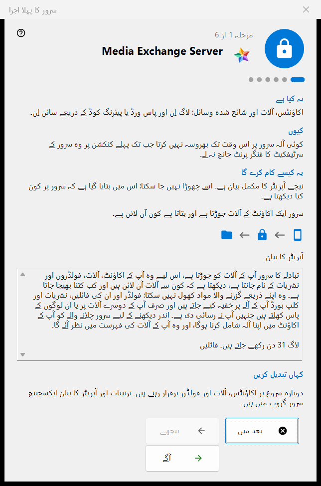
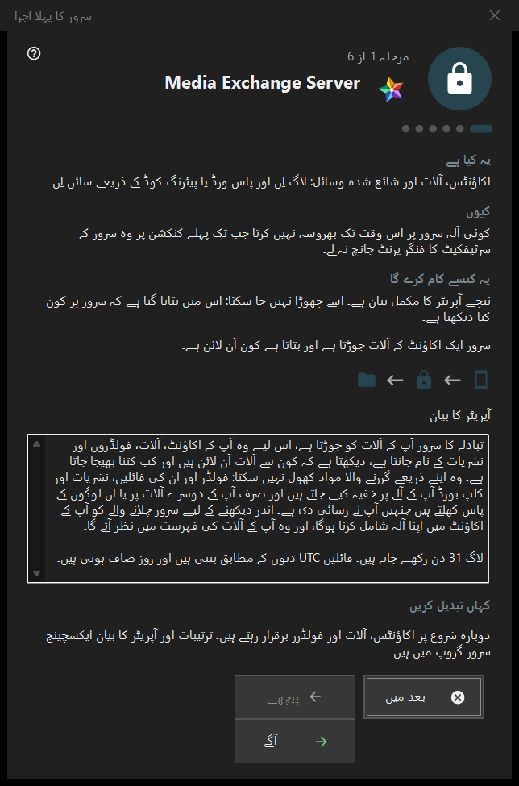

سرور کا پہلا اجرا
یہ کس مقصد کے لیے ہے
Share Manager کے ایکسچینج سرور گروپ کے لیے پہلی بار چلانے کی رہنمائی۔ یہ بتاتی ہے کہ یہ کمپیوٹر کیا بن جاتا ہے، آپریٹر کا بیان دکھاتی ہے، پورٹس، کلائنٹس کے لیے پتہ اور پہلا اکاؤنٹ طے کرواتی ہے، اور سرور کی حالت پر ختم ہوتی ہے۔ یہ صرف تب کھلتی ہے جب ایکسچینج سرور موجود اور فعال ہو۔


اس ترتیب میں
- پہلے صفحے پر آپریٹر کا بیان پڑھیں۔
- پورٹس اور فائر وال کا اصول دیکھیں۔
- جس سرور ایڈیشن میں سروس نہیں ہے، وہاں Windows سروس کے بارے میں فیصلہ کریں۔
- کلائنٹس کے لیے پتہ بھریں۔
- پہلا اکاؤنٹ بنائیں۔
- سرٹیفکیٹ کا فنگر پرنٹ دیکھیں اور ختم دبائیں۔
عناصر
صفحات اور بٹن
نچلی پٹی میں مرحلہ N از M دکھائی دیتا ہے؛ پیچھے، آگے اور بعد میں کسی بھی وزرڈ کی طرح کام کرتے ہیں، اور آخری صفحے پر ختم مینیجر کا ایکسچینج سرور گروپ کھولتا ہے۔ کوئی صفحہ بغیر تبدیلی کے چھوڑا جا سکتا ہے: تب سرور بند رہتا ہے یا جیسا تھا ویسا ہی رہتا ہے۔
آپریٹر کا بیان
اس کا مکمل بیان کہ سرور پر کون کیا دیکھتا ہے۔ اسے چھوڑا نہیں جا سکتا۔ سرور ایک اکاؤنٹ کے آلات کو آپس میں جوڑتا ہے اور بتاتا ہے کہ ان میں سے کون سے آن لائن ہیں۔
پورٹس اور فائر وال
آلات کے ملنے کے لیے ایک پورٹ اور تیسرے فریق کے کلائنٹس کے لیے پورٹس کی ایک حد۔ آلات کو سرور کا پورٹ معلوم ہونا چاہیے، اس لیے تبدیلیاں صرف نئے کوڈز پر لاگو ہوتی ہیں۔ فائر وال کا اصول پروگرام کے نام پر ہے، اس لیے پورٹ بدلنے پر نیا اصول درکار نہیں۔ یہ قدریں ایکسچینج سرور گروپ میں رہتی ہیں۔
Windows سروس
صرف اس سرور ایڈیشن میں دکھائی دیتی ہے جہاں سروس ابھی موجود نہیں۔ سروس سرور کو تب بھی دستیاب رکھتی ہے جب کوئی سائن اِن نہ ہو۔ چیک باکس صرف آپ کی رضامندی یاد رکھتا ہے: سروس پہلا اکاؤنٹ بننے کے بعد ایک اجازت کی درخواست کے ساتھ رجسٹر ہوتی ہے، اور اس سے پہلے کچھ انسٹال نہیں ہوتا۔ ایکسچینج گروپ میں سروس کے طور پر رجسٹر کریں.. بعد میں یہی کام کرتا ہے۔
کلائنٹس کے لیے پتہ
کلائنٹس کے لیے پتہ (ہوسٹ:پورٹ): وہ پتہ ہے جس سے دوسرے آلات اس کمپیوٹر تک پہنچتے ہیں۔ مقامی پتہ تجویز کریں دبانے پر ہی خانہ بھرتا ہے۔ خالی پتہ صرف مقامی پہلا آغاز درست رکھتا ہے، لیکن نشریات اور فولڈر کنکشن دوسرے آلات سے چھپا دیتا ہے۔
پہلا اکاؤنٹ
وہ اکاؤنٹ جس سے پہلا آلہ سائن اِن کرتا ہے۔ پاس ورڈ بنائیں یا اپنا پاس ورڈ درج کریں چنیں؛ اس کمپیوٹر کو اکاؤنٹ سے جوڑیں اس کمپیوٹر کو اس میں شامل کرتا ہے۔ آگے اکاؤنٹ بناتا ہے، سرور شروع کرتا ہے اور سرٹیفکیٹ جانچتا ہے۔ پاس ورڈ موجودہ ڈائیلاگ میں ایک بار دکھایا جاتا ہے اور اس پی سی پر محفوظ نہیں ہوتا۔ اکاؤنٹ بننے کے بعد کوئی ناکامی ہو تو اکاؤنٹ ہٹایا نہیں جاتا۔
سرور تیار ہے
آخری صفحہ بتاتا ہے کہ پتہ، لاگ ان اور سرٹیفکیٹ کا فنگر پرنٹ کہاں درج ہیں، اور فنگر پرنٹ کاپی کریں اور کنکشن اسٹرنگ اور QR کوڈ.. بٹن دیتا ہے۔ پہلے کنکشن پر فنگر پرنٹ جانچنے کے بعد آلہ سرور پر اعتماد کرتا ہے۔ فون جوڑیں (مدد) اور پہلا فولڈر شائع کریں (مدد) کے لنک متعلقہ مدد کے صفحات پر لے جاتے ہیں۔
مینیجر کی ترتیبات · SFTP اشتراک کی ترتیبات · ایکسچینج سرور کی ترتیبات